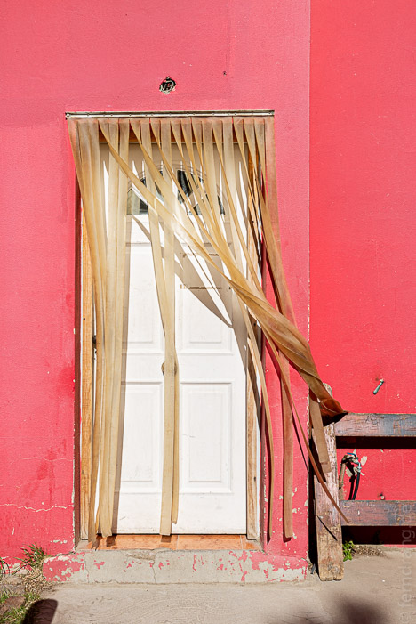
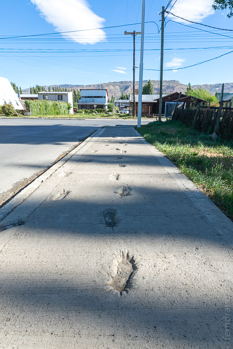

Mit der schönen Wanderung im Torres de Paine Park haben wir unsere Todo-Liste in Chile abgehakt. Von Puerto Natales sind wir mit dem Bus nach El Calafate in Argentinien gefahren. Das hat sich ziemlich gezogen, weil es Stau an der Grenze gab. Außerdem ist die Landschaft sobald die Berge außer Sicht sind, derart eintönig, dass man sofort einschläft.
El Calafate liegt an einem riesigen See, der patagonisch grün schimmert. Der Ort hat etwas von den Kleinstädten in den Rocky Mountains. Alles ist einstöckig, die Häuser sind aus dicken, polierten Holzstämmen gebaut und das einzige Gericht, das es zu geben scheint, sind Hamburger.
Wir sind im Bla Guesthouse untergekommen, das wie eine Kita aussieht. Bei einem Spaziergang haben wir alle Geldautomaten der Stadt ausprobiert. Die meisten spucken nämlich nur Kleinstbeträge gegen horrende Gebühren aus. Am Stadtrand ist eine geschützte Lagune, die zur Vogelbeobachtung ausgebaut wurde. Dort sabbern Flamingos im Schlamm und auch zwei kleine Füchse haben sich sehr über die vielen Vogel gefreut. Man sollte ein Fernglas und Muße mitbringen, was wir beides nicht hatten.
 